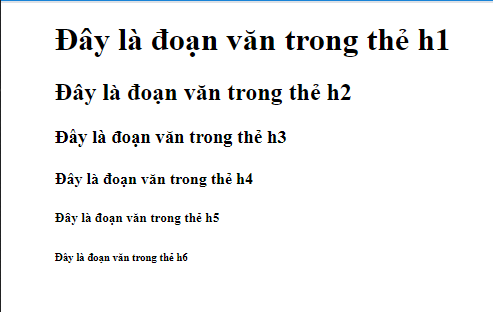

Structural markup
Phần này sẽ bao gồm các yếu tố, thành phần để mô tả tiêu đề và đoạn văn
danh sách các thẻ trong phần này là: h1, p, b, i, sub, sup, br, hr.
và tìm hiểu thêm về white space
Heading: phần mở đầu
Thẻ heading chứa nội dung quang trọng và tóm gọn cho bài viết,
ta có thể hiển rằng heading là một tiêu đề cho một bài viết và nó phân theo cấp bậc
từ h1 đến h6 và h1 lớn nhất, thẻ heading mặt định sẽ in đậm và kích thước chữ lớn
và giảm dần từ h1 đếnh6
VD:
Paragraphs: đoạn văn.
Thẻ p sẽ chứa một đoạn văn.
Mỗi đoạn sẽ được xuống dòng sau khi cuối đoạn văn có thẻ đóng
Bold & italic: im đậm và in nghiêng
Thẻ Bold(b) in đậm thường được sử dụng cho các từ khóa
Thẻ Italic (i) in nghiêng thường được sử dụng cho các từ chỉ là tên, kỹ thuật, từ ngữ, suy nghĩ,...
Superscript & Subscript:
Thẻ superscript (sup) thường được dùng cho hậu tố của ngày tháng, hoặc trong toán học VD: 6th, 10x, ...
Thẻ subscript(sub) thường được dùng chú thích hoặc ký tự hóa học VD: H2O ...
Line breaks & Horizontal rules:
Thẻ br: ngắt dòng
Thẻ hr tạo đường kẻ ngang, khi bạn muốn thay đôi chủ đề hãy dùng thẻ này
White space: nếu trình duyệt duyệt qua đoạn văn và thấy hơn hai spaces, thì nó chỉ hiện một,
và cũng thế nếu khi code ta break trình duyệt sẽ tự động tạo một space cho chúng ta